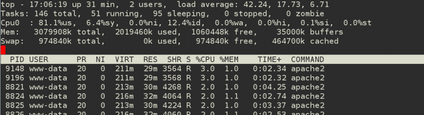
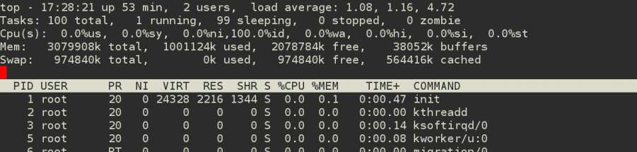

Varnish: Fazendo seu site voar
Por Hugo Cisneiros | http://www.devin.com.br
Movile | www.movile.com
Seu site foi instalado, populado e está pronto. Está tudo lindo!
Certo?
Errado!
Alguns problemas:
- Desenvolvedores acham que se funcionar na máquina deles, não há problemas...
- "Meu site não tem muitos acessos..."
- Faço amanhã!

Desempenho?
- Ninguém gosta de site lento ou fora do ar.
- Cada milisegundo importa pro usuário final. Pode não parecer muito, mas importa.
- Google mensurou perda de 20% de tráfego em um aumento de 400ms.
- Amazon mensurou perda de 1% de vendas em um aumento de 100ms.
Tenso né?

Desempenho?
Nosso objetivo: carregar a página o mais rápido possível e para o maior número de pessoas possíveis ao mesmo tempo.

Tamanho da página e otimizações HTML
Não vamos falar aqui sobre coisas como:
- Tamanho das páginas;
- Javascript e CSS unificados e minimizados;
- Compressão de imagens;
- Javascript não-bloqueador.
Se desenvolvedores não sabem desses tópicos, procurem saber urgentemente!
Conheça o Varnish
- É um software livre que atua como camada intermediária entre o usuário e o servidor Web
- Ele pega uma página dinâmica e transforma em uma página estática, em memória
Exemplo simples, SEM cache
|
CPU: E7500 @ 2.93GHz 3GB de RAM apache2 + mod_php mysql 5.5 |
Concurrency Level: 50 Time taken for tests: 217.099 seconds Complete requests: 932 Requests per second: 4.29 [#/sec] (mean) Time per request: 11646.966 [ms] (mean) |

Exemplo simples, COM cache
|
CPU: E7500 @ 2.93GHz 3GB de RAM apache2 + mod_php mysql 5.5 |
Concurrency Level: 50 Time taken for tests: 1.602 seconds Complete requests: 10000 Requests per second: 6242.42 [#/sec] (mean) Time per request: 8.010 [ms] (mean) |

Aí sim!

Como e quando fazer cache?
- Mexer no servidor web, código, banco de dados, entre outros, melhora mas não faz milagres. Quem faz milagre é o cache.
- Separe todos os itens estáticos (que podem ser vistos por todos os usuários igualmente e os dinâmicos (muda de usuário pra usuário);
- Exemplo: Estático é o texto do post. Dinâmico é a quantidade de visualizações do post.
Faça cache de tudo que for estático!
- O cache permite que a página seja gerada apenas uma vez e servida para muitos;
- Há várias técnicas de cache: cache de objetos, de consultas ao banco, de código, de páginas no servidor web;
- Falaremos apenas de cache do lado do servidor.
Exceções
- Cookies sempre mudam de usuário para usuário;
- Autenticação e usuários logados;
- Query strings aleatórias NÃO!
Dúvidas que surgem quando colocamos cache...
- Meus dados não estão sendo atualizados! (Purge neles!)
- Tenho várias versões de páginas, como fazer cache diferente? (Cookie é bom!)
- Minha administração parou de funcionar direito! (Nunca faça cache da administração!)
- Como devo cachear meu site? (Não sei, você tem que conhecer o seu site! Estude-o!)
Demo: Instalação e configurações básicas
Checklist
- Backends
- Balanceamento de backends
- Escolhendo um backend
- Tempo de cache
Obrigado! :)
Por Hugo Cisneiros | http://www.devin.com.br
Movile | www.movile.com
Gifs divertosas tiradas do DevOps Reactions